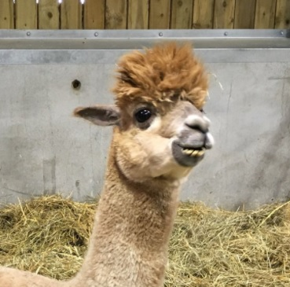

Trump Hair
Original
The Donald 
This is the original Trump hair. It is found often in nature.
Look alike #1
Corn Silk
There have been many cases of corn silk that appear like Trump's hair.
Look alike #1
Llama Hair 
There are many animals that have Trump hair. This llama is looking very stylish.